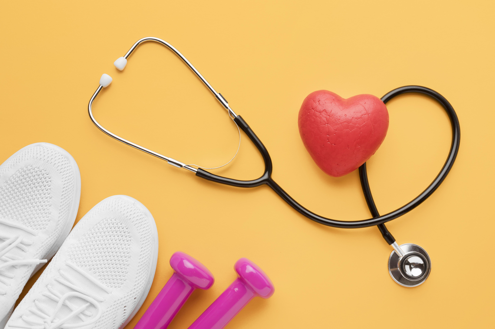

AASTMT
AASTMTHealth
- Setting a specific time for sleeping and waking up: It is important to organize the time of sleeping and waking up so that the amount of sleep ranges between 6 to 8 hours per day. To make adhering to the sleep schedule easier, it is recommended to stay away from any source of light emitted from screens for at least an hour before bed.
- Drink water upon waking up: It is recommended to drink a glass of water immediately upon waking up, while avoiding drinks containing caffeine for as long as possible after waking up. To ensure good health, the body's daily water needs must be met, as men need about 3.7 liters and women need 2.7 liters per day.
- Eat vegetables with every meal: Make sure to include vegetables in every meal, so that the amount of vegetables is close to the amount of carbohydrates eaten. This balance helps improve overall nutrition and support the health of the body.
- Reduce sugar consumption gradually: It is recommended to gradually reduce the amount of sugar consumed daily. This step helps reduce dependence on sugar and improve overall health in the long term


Knowledge
- - Listen to a podcast for half an hour: Set aside half an hour in the morning while eating breakfast, exercising, or doing any other physical task to listen to an episode of a podcast in a specific field. After listening, brainstorm what you heard, and write down the main points covered in the podcast. Before going to sleep, review these points to enhance understanding.
- - Read 5 pages a day: Start by reading at least 5 pages a day in a book you love. At the end of each week, review what you read and re-explain it to yourself to consolidate the knowledge.
- - Follow the weekly news: Set aside half an hour one day of the week to read the latest news in your field, and another quarter of an hour to read other fields. This habit helps to stay informed and expand the horizons of knowledge.
- Important note: To increase the level of knowledge, a person must identify the fields he is interested in, then implement specific habits to acquire information. After that, he must apply or experiment with this information to transform it into real knowledge in this field.
Money
Here are some tips to improve financial management in general:- - Set a fixed amount for savings: It is important to allocate a fixed amount of your monthly salary to savings, so that it is automatically withdrawn and only used in cases of extreme necessity. It is advisable to adjust your monthly needs based on what remains of your salary after saving.
- - Save savings in ways that preserve their value: To protect the value of savings, they can be invested in forms that preserve their value such as gold, real estate, investment stocks, or placed in a bank account (in accordance with the teachings of your religious faith). The performance of these investments should be monitored monthly to assess the market's impact on them.
- - Diversify sources of income: To reduce dependence on a fixed work salary only, it is advisable to expand sources of income. This can be achieved by partnering in a business project, investing in investment funds, or self-employment. This diversification ensures greater financial stability in the long term.